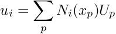
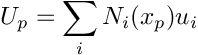

- Generated by
 1.9.3
1.9.3
|
quadgrid 0.1
simple cartesian quad grid with particles for c++/octave
|
This library provides simple (template) classes that for a useful starting point for the implementation of MPM/PIC methods
The repository consists of the following folders :
include contains headers (*.h) and template method definition files (*_imp.h) the main files included arequadgrid_cpp.h including the declaration of the (template) class quadgrid_t representing the quad gridquadgrid_cpp_imp.h contains out-of-line definitions for template methods of the quadgrid_t class particles.h declares the particles_t clares representing particles embedded in a quadgrid_t gridsrc contains implementation of methods in the above classes that do not depend on template parameterstest provides a few tests and examplesoctave provides a draft of an interface for accessing qudtree objects from within the GNU Octave interpreter, which consists ofquadgrid.h defining the quadgrid class inheriting from octave_base_valuequadgrid.cc defines two Octave functions quadgrid and quadgrid_loopaccessible from the interpreterTo build the examples move to the test directory and run
mpicxx -std=c++17 -I../include -o particle_sort_example particle_sort_example.cpp ../src/particles.cpp
particles_t::p2g implements transfer of quantities from the particles to the grid according to the formula

particles_t::g2p implements transfer of quantities from the particles to the grid according to the formula
